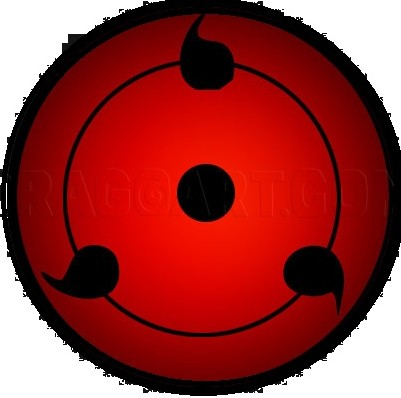

Slide down to experience seamless transitions and dynamic changing images.
Your local dog image integrated directly into a full-screen cinematic slide.

Smoothly snapping to the next section with perfectly aligned images and text.
Thank you for scrolling. Create as many slides as you want by copying the section code!